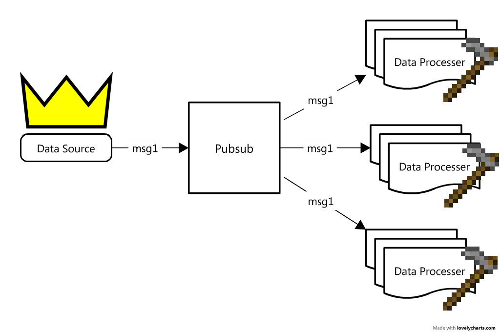
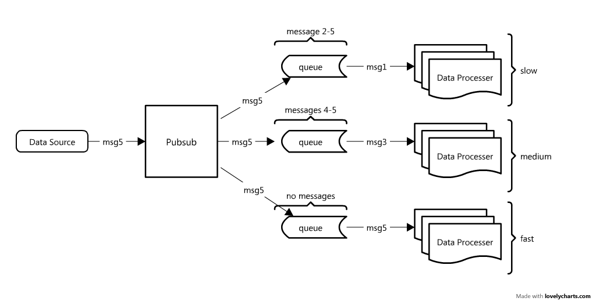

Realtime Stream Processing
Micha Gorelick
@mynameisfiber
micha@bit.ly
github.com/mynameisfiber
Why streams?
THERE IS A LOT OF DATA!
Streams move fast, we need some infrastructure to support it
enter: SimpleHttp
SimpleHttp
Open Source
Provides simple bindings to various utilities including:
Databases
Queues
Pubsubs
Everything is done with HTTP GET/POST requests which means there are no compatability issues
We will focus on PUBSUBS and QUEUES
WTF is a
plurbsurb
pubsub?
pubsub ~= Town Crier
Takes information from the "king" and distributes it out to the villagers

Data comes in from our data sources and the pubsub
pub
lishes the data to all of the
sub
scribers
Looks perfect!
No further work needed... right?
What if data is coming in faster than we can process?
The processors will timeout and miss messages from the pubsub
unacceptable!
enter: simple
queue
simple, network based queue system
queue ~= secretary
data processors are busy things! we need someone to help them manage their tasks
queues store messages on a stack until requested

←
→
/